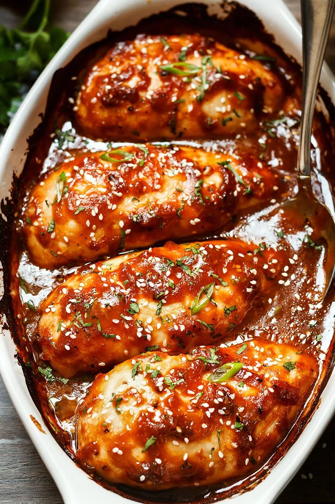

Chicken Breast
Chicken breast is the perfect metabolism-revving food because it’s high in protein and low in fat. And you can easily cook this lean, versatile muscle-builder on the grill, in the oven, or in a pan for a quick, delicious dinner.
Ingredients
- 4 (5 ounce) skinless, boneless chicken breast halves
- 2 tablespoons olive oil
- ½ teaspoon coarse sea salt, or to taste
- 1 pinch Creole seasoning (such as Tony Chachere's®), or more to taste
- 1 tablespoon chicken broth, or more to taste
Steps
- Gather all ingredients.
- Preheat the oven to 400 degrees F (200 degrees C).
- Rub chicken breasts with olive oil and sprinkle both sides with salt and Creole seasoning. Place chicken in a broiler pan.
- Bake in the preheated oven for 10 minutes. Flip chicken and cook until no longer pink in the center and the juices run clear, about 15 minutes more. An instant-read thermometer inserted into the center should read at least 165 degrees F (74 degrees C).
- Remove chicken to a plate.
- Pour chicken broth into the pan and scrape any browned bits off the bottom with a flat-edged wooden spatula. Add more broth if needed to dislodge the browned bits, but not too much or it will be watery.
- To serve, drizzle the pan sauce over the chicken.